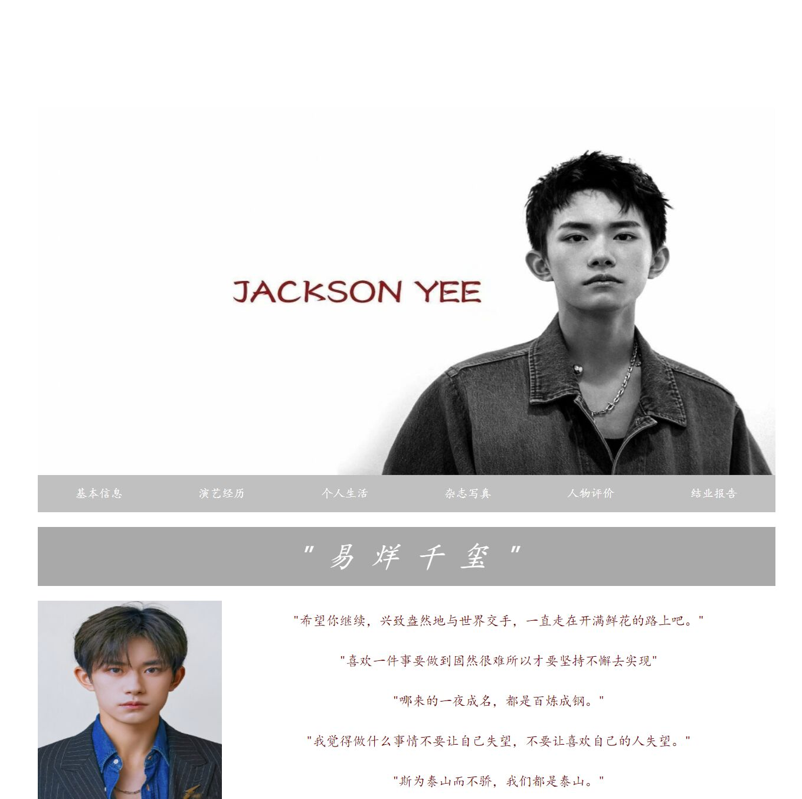

本次web结业作业我所构建的是以“易烊千玺”为主题的静态网站。
我将这个网站分成7页，分别是“首页”、“基本信息”、“演艺经历”、“个人生活”、“杂志写真”、“人物评价”以及作业要求的结业报告界面
本次实验我选择的是静态网页的开发，使用的是vscode开发环境,没有选择使用框架，自己进行全部页面的代码书写，网页主要图片、文字组成，在首页我为网站加入了背景音乐，对每个页面的图片进行了排版,如下图的主页面
每个页面可以从上方导航栏进行页面的跳转，点击页面底部“易烊千玺文字可回到主页面”。
①对于网页的布局掌握不好，页面美观性不足
解决办法：不断的调整来达到理想化的效果，虽然最终结果还是很好看，但相对已经满意了
②由于最开始没有使用框架，后续自己写一些东西非常麻烦
解决办法：试图重新用框架做，但由于时间不足，对框架的使用非常不熟练，所以最终放弃了
③托管到GitHub没有经验，网上教程多样化，托管时出现上传后无显示等情况
更换不同的托管教程、向同学请教，最终托管成功
④首页加入的背景音乐无法自动下载加播放
通过这次《Web应用基础》课程的学习，我对网页设计的知识有了更加深刻地了解，也对此产生了浓厚的兴趣，但由于课程时间较短，其他专业学习时间占比太大，因此我还没有更加全面的掌握这些知识，准备在暑假期间更加深入的学习网页制作的相关知识， 领会到了框架的重要性，后续会进行深入的学习，web课程虽然结束了，但它绝不止步于此，我会继续学习web的相关知识，以后能更加熟练地运用web技术。